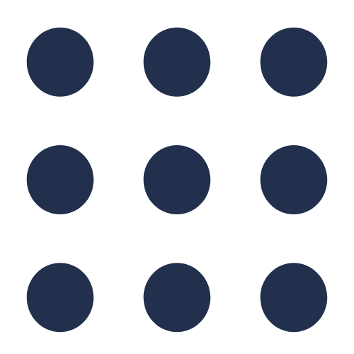
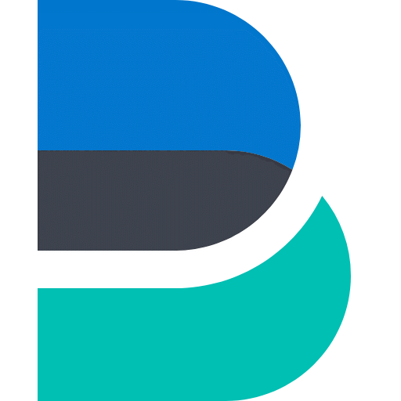

😎 About
I am a control and learning engineer working on data-driven optimal control for robotic systems, with a focus on integrating Neural ODE models into nonlinear MPC and validating performance through real-world experiments.
🎓 Education
-
[E1]
Master’s Degree in Water & IT Engineering,
Kyoungpook National University
Physical Intelligence Laboratory
Sep. 2024 – Aug. 2026 (Expected)
-
[E2]
Master’s Degree in Mathematics,
Pusan National University
Financial Mathematics Laboratory
Sep. 2017 – Aug. 2019
-
[E3]
Bachelor’s Degree in Mathematics Education,
Inha University
Mar. 2013 – Feb. 2017
🎤 Conference Talks & Posters
-
[T1]
Nonlinear MPC with RNN-Based Neural ODEs Trained on Trajectory Tracking Demonstrations
25th International Conference on Control, Automation and Systems (ICCAS 2025)
Incheon, Republic of Korea
Poster Presentation, November 4, 2025. -
[T2]
Nonlinear MPC Using LSTM-Based Neural ODEs Trained on Trajectory Tracking Demonstrations
IEEE/RSJ International Conference on Intelligent Robots and Systems (IROS 2025)
Hangzhou, China
Poster Presentation, October 22, 2025. -
[T3]
NeuralODE-LSTM 기반 오차 동역학 모델을 활용한 비선형 MPC에 의한 모바일 로봇 경로 추적
The 56th Summer Conference of the Korean Institute of Electrical Engineers (KIEE 2025)
Busan, Republic of Korea
Oral Presentation, July 18, 2025. -
[T4]
금융시장지수의 국내 주택매매시장 적용가능성 연구
Annual Meeting of the Korean Society for Industrial and Applied Mathematics (KSIAM 2019)
Yeosu, Republic of Korea
Poster Presentation, November 9, 2019.
📚 Publications
-
[P1]
The Pricing of Vulnerable Options under a Constant Elasticity of Variance Model
Junhui Woo (Previously published as: Junhui U.), Donghyun Kim, Ji-Hun Yoon*
Journal of the Chungcheong Mathematical Society, vol. 33, no. 2, 2020. -
[P2]
Pricing American Lookback Options under a Stochastic Volatility Model
Donghyun Kim, Junhui Woo, Ji-Hun Yoon*
Bulletin of the Korean Mathematical Society, vol. 60, no. 2, pp. 361–388, 2023. -
[P3]
Nonlinear MPC with RNN-Based Neural ODEs Trained on Trajectory Tracking Demonstrations
Junhui Woo, Sangmoon Lee*
Proceedings of the 25th International Conference on Control, Automation and Systems, pp. 368–373, 2025.
* Corresponding author
📑 Projects
-
[Pj1] Project Title 1
Short one-line description of the project objective
Key techniques / methods / systems (e.g., NMPC, Neural ODE, ROS2).
Role: Your role (e.g., Lead developer, Researcher).
Period: YYYY.MM – YYYY.MM.
[GitHub] [Demo] -
[Pj2] Project Title 2
Short one-line description of the project objective
Key techniques / methods / systems.
Role: Your role.
Period: YYYY.MM – YYYY.MM.
[GitHub] [Report]
💼 Work Experience
-
[W1] Data Engineer (Freelancer), Samsung SDS
Apr. 2024 – Aug. 2024
Data ELT pipeline operation and maintenance using AWS services. -
[W2] Data Analyst & Quant Developer,
KIS Pricing
[URL]
Sep. 2017 – Aug. 2019- SDE-based stock price and volatility modeling
- Monte Carlo simulation and numerical option pricing methods
- Implementation of evaluation modules in Python and C
🏆 Awards & Certificates
-
[A1]
Graduate Academic Excellence Award
College of Natural Sciences, Pusan National University
Awarded for outstanding academic performance and the publication of high-quality research articles during the master’s program.
May 29, 2020. -
[C1]
Engineer Information Processing
Human Resources Development Service of Korea (HRDK)
Passed in June, 2024. (Exact date to be updated) -
[C2]
Associate Data Analyst (ADsP)
Korea Data Agency (K-DATA)
Passed on June 7, 2024. -
[C3]
SQL Developer (SQLD)
Korea Data Agency (K-DATA)
Passed on April 5, 2024.
🛠 Skills

ROS / ROS2
Apache Hadoop

Elastic Beats